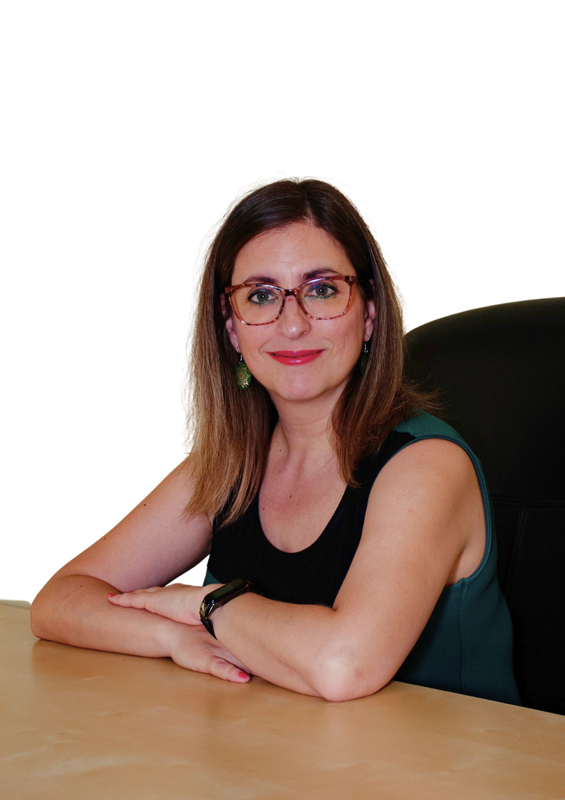

<div class="container">
  <div class="wrap">
    <div class="title">
      <h3>¡Hola! Soy Rosana</h3>
      <p>¡Hola! Soy Rosana</p>
    </div>
    <div class="container-set1">
      <div class="leftside">
        <p>
          Mi nombre es Rosana Calvo Cruza y
          <span>soy psicóloga por vocación.</span>
        </p>

        <p>
          Siempre me interesé por las personas, y en el especial por el
          sufrimiento humano.
        </p>

        <p>
          Desde muy pronto supe que quería ser psicóloga, tuve la fortuna de
          descubrir esa vocación tempranamente. Junto con enseñar y formar a las
          personas, que por suerte son las 2 labores que realizo hoy en mi vida.
        </p>

        <p>
          Compagino el trabajo en mi consulta, con el trabajo como
          <span>entrenadora emocional en "Gimnasio-emocional"</span>, para grandes
          empresas. Siendo responsable del
          <span
            >área de prevención en salud mental y bienestar emocional.</span
          >
        </p>
      </div>

      <div class="rightside">
        
      </div>
    </div>


    <div class="container-set2">
        <p>
          Estudié psicología, decantándome hacia la psicoterapia. Al finalizar
          mi carrera, realicé un <span>Master en Psicología clínica</span> y
          comencé pronto a ejercer la profesión.
          <span>Durante 14 años</span> trabajé en el terreno público, un tiempo
          en <span>Centros de adicciones (CAID-CAD)</span>, y fundamentalmente
          en la <span> Red de personas con enfermedad mental grave y duradera </span>.
        </p>

        <p>
          Mi orientación era <span>cognitivo-conductual</span>, la cual aprendí
          tanto en la carrera como en el Master, pero tenía la sensación al
          realizar terapia, de que necesitaba llegar a más, que este tipo de
          tratamientos se quedaban en la superficie de los problemas.
          <span> Fue así como descubrí la Terapia EMDR.</span>
        </p>

        <p>
          En otras terapias había aprendido a entender y conceptualizar los
          problemas, a saber de dónde vienen, en que momentos de la vida de la
          persona se han aprendido creencias, patrones emocionales, bloqueos,
          etc. Pero consideraba que esas herramientas
          <span
            >eran insuficientes para cambiarlos y sanarlos en profundidad</span
          >
          . La terapia EMDR llegó justo para resolver ese aspecto, ya que
          permite ir a la raíz de esos aprendizajes y
          <span
            >ayudar a las personas a sanar, modificar patrones y resolver sus
            traumas.</span
          >
        </p>

        <p>
          Desde entonces ha cambiado por completo mi forma de realizar terapia y
          casi <span>mi propia vida</span>.
        </p>

        <p>
          No dejo de maravillarme al ser testigo de las
          <span>sanaciones y transformaciones</span> que viven las personas a
          las que acompaño, gracias a la eficacia de ésta terapia.
        </p>

        <div class="container-button center">
          <button class="pink">Seguir leyendo sobre EMDR</button>
        </div>
    </div>

    <div class="title green">
      <h3>Formación Oficial</h3>
      <p>Formación Oficial</p>
    </div>

    <div class="container-set3">

      <div class="card">
        <h3>Licenciada en <span>Psicología</span></h3>
        <p>Universidad Autónoma de
          Madrid</p>
      </div>

      <div class="card">
        <h3>Master en "Psicología Clínica"</h3>
        <p>CINTECO</p>
      </div>

      <div class="card">
        <h3>Master en "Inteligencia Emocional"</h3>
        <p>Universidad Camilo José Cela</p>
      </div>

      <div class="card">
        <h3>Experta en "Psicoterapia integradora infanto-juvenil"</h3>
        <p>NB Psicología</p>
      </div>

      <div class="card">
        <h3>Formación "EMDR Nivel I y II"</h3>
        <p>Asociación EMDR España</p>
        <p>Acreditada Terapeuta EMDR, siendo supervisada y preparándome para
          Clínico.</p>
      </div>

      <div class="card">
        <h3>Especialista universitario en "Trauma y EMDR"</h3>
        <p>Universidad UNIR</p>
      </div>

      <div class="card">
        <h3>Formación avanzada en "EMDR, Apego y Disociación"</h3>
        <p>Universidad UNIR</p>
      </div>

      <div class="card">
        <h3>Acreditada para ejercer Psicología Sanitaria por la Comunidad de Madrid</h3>
      </div>

    </div>
  </div>
</div>
